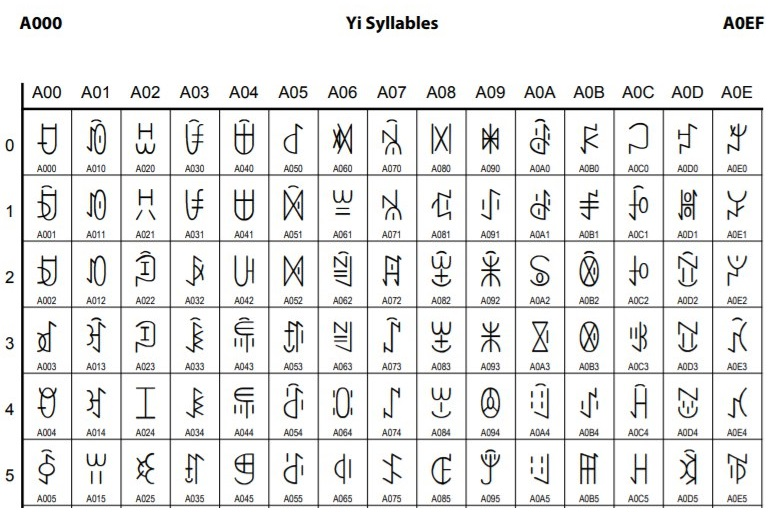

Одна из сложностей при работе с фонетиками заключается в том, что некоторые из них не представлены в шрифтах, поскольку не являются ни иероглифами, ни ключами. Работать с такими знаками как с картинками в рамках веб-приложения также неудобно, поэтому я создал для них свой шрифт Fonetics.ttf в редакторе шрифтов.
Например фонетик, получаемый вычитанием из 撤 ключа 扌 невозможно отобразить с использованием стандартных шрифтов, но с шрифтом Fonetic такая возможность появляется.
Для шрифта фонетиков я использовал диапазон кодовых точек в Юникоде, начиная с A000. Изначально в этом диапазоне располагаются символы письменности народности И, проживающей на территории Китая.

Поэтому если шрифт Fonetics.ttf установился не корректно, то вместо части фонетиков вы увидите символы из диапазона выше. Красиво, но не это не то, что нужно в нашем случае. К сожалению, такое может случиться если вы используете, например, браузер Internet Explorer. Дело в том, что данный браузер не поддерживает загрузку с сайта шрифтов формата .ttf. Для него необходимы шрифты формата EOT (Embedded OpenType). Пока шрифт в этом формате не готов, поэтому рекомендую использовать другой браузер, например Chrome. Или как вариант — скачать шрифт Fonetic.ttf по ссылке ниже и установить его вручную локально.
Скачать